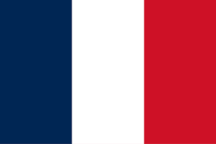
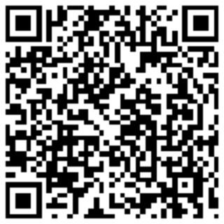

Interests
- Theatre (Omnes Education London club)
- Judo (club), gymnastics, hiking
- Science, philosophy, popular science
- Community involvement: Becomtech, ExECE, Science Ouverte



Available for a cybersecurity apprenticeship starting in September 2025

Cybersecurity engineering student passionate about information systems governance and protection. With a background combining engineering, hands-on academic projects, and strong community engagement, I'm driven to take on tomorrow’s cybersecurity challenges. Currently enrolled at ECE Paris, I plan to pursue a specialized Master's at Télécom Paris - ESSEC.